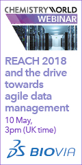

Advertisements

Also from the RSC
<h4 style="color:#003c73;font-family:Verdana;font-size:12px;font-weight:500;">Advertisements</h4> <p><a href="http://oas.rsc.org/RealMedia/ads/click_nx.ads/www.rsc.org/periodic-table/element/1/hydrogen/26869200@Right1,Right2,x01,x02!x01" target="_blank"><img src="http://oas.rsc.org/RealMedia/ads/adstream_nx.ads/www.rsc.org/periodic-table/element/1/hydrogen/26869200@Right1,Right2,x01,x02!x01" border="0" alt="Advert"></a></p> <p><a href="http://oas.rsc.org/RealMedia/ads/click_nx.ads/www.rsc.org/periodic-table/element/1/hydrogen/26869200@Right1,Right2,x01,x02!x02" target="_blank"><img src="http://oas.rsc.org/RealMedia/ads/adstream_nx.ads/www.rsc.org/periodic-table/element/1/hydrogen/26869200@Right1,Right2,x01,x02!x02" border="0" alt="Advert"></a></p> <br /> <h4 style="color:#003c73;font-family:Verdana;font-size:12px;font-weight:500;">Also from the RSC</h4> <p><a href="http://oas.rsc.org/RealMedia/ads/click_nx.ads/www.rsc.org/periodic-table/element/1/hydrogen/26869200@Right1,Right2,x01,x02!Right1"><img src="http://oas.rsc.org/RealMedia/ads/adstream_nx.ads/www.rsc.org/periodic-table/element/1/hydrogen/26869200@Right1,Right2,x01,x02!Right1" border="0" alt="RSC Advert"></a></p> <p><a href="http://oas.rsc.org/RealMedia/ads/click_nx.ads/www.rsc.org/periodic-table/element/1/hydrogen/26869200@Right1,Right2,x01,x02!Right2"><img src="http://oas.rsc.org/RealMedia/ads/adstream_nx.ads/www.rsc.org/periodic-table/element/1/hydrogen/26869200@Right1,Right2,x01,x02!Right2" border="0" alt="RSC Advert"></a></p>